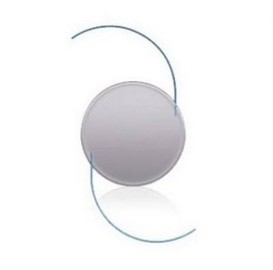
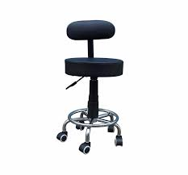
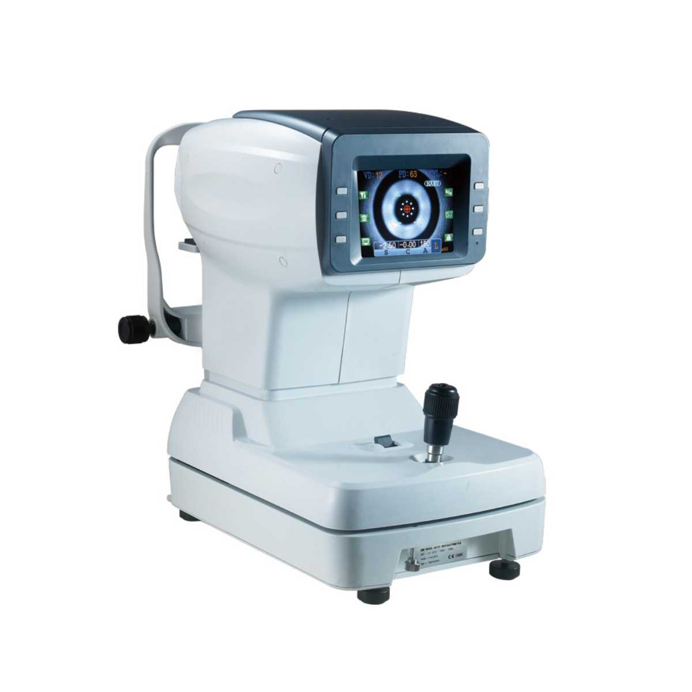
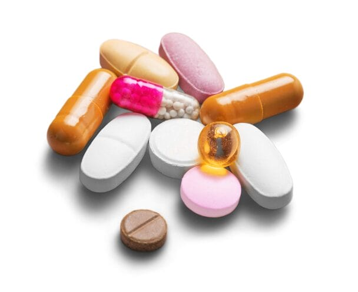
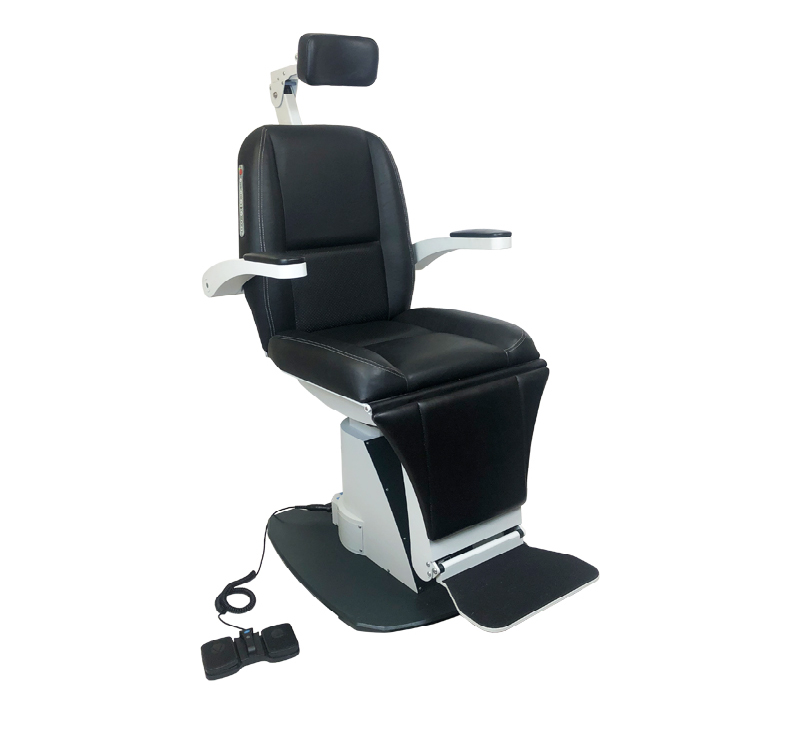
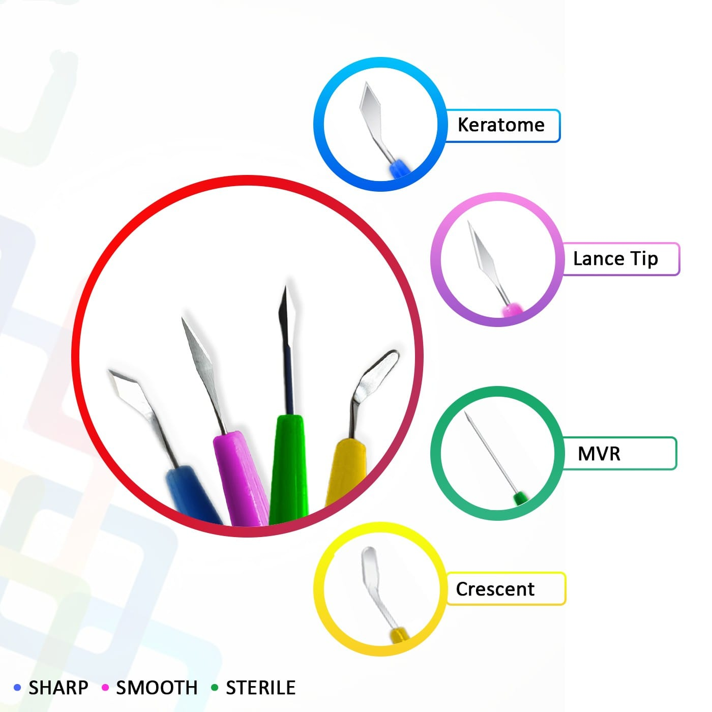

Made from high-quality, fluid-resistant material to minimize infection risk
Adhesive aperture ensures secure placement around the surgical site
Transparent side panels provide clear visibility of surgical instruments
Latex-free, non-woven fabric enhances patient safety and comfort
Ideal for cataract surgery, vitrectomy, and other ophthalmic procedures
Available in various sizes for different surgical requirements

Intra Ocular Lens
Restores clear vision after cataract surgery
Available in foldable and rigid types
Lightweight and biocompatible design
Offers UV protection for long-term eye health
Additional Information:
Made of acrylic or silicone material
Can be monofocal, multifocal, or toric
Implanted inside the eye to replace the natural lens
Requires no special care post-implantation
Description: An Intra Ocular Lens (IOL) is an artificial lens placed inside the eye during cataract surgery. It helps restore vision by replacing the clouded natural lens, and modern IOLs offer advanced optics for sharper focus and visual comfort.

Doctor's Stool
Height-adjustable for ergonomic comfort
Smooth-rolling wheels for easy mobility
Durable and easy-to-clean seat material
Stable base with anti-tip design
Ideal for clinics, hospitals, and labs
Additional Information:
Pneumatic height adjustment with gas lift mechanism
360° swivel seat for enhanced accessibility
Cushioned seat provides comfort during extended use
Available in both backrest and backless variants
Supports efficient patient interaction and mobility in clinical settings
Description: A Doctor’s Stool is a practical and ergonomic seating solution designed to offer flexibility and comfort during patient examinations or procedures. Its mobility and height adaptability make it a must-have in modern healthcare setups.

Auto Refractometer
Accurately measures refractive errors of the eye
Quick and non-invasive eye examination tool
Essential for optometry and ophthalmology clinics
Easy-to-use with touchscreen interface
Delivers reliable and consistent results
Additional Information:
Automatically detects myopia, hyperopia, and astigmatism
Compact design with printer and USB connectivity options
Advanced image processing for precise readings
Ideal for pre-checkup before final lens prescription
Supports both adult and pediatric eye assessments
Description: The Auto Refractometer is a diagnostic instrument used to measure the refractive index of the eyes with speed and precision. It assists in providing accurate prescriptions and is widely used in clinical and hospital eye testing setups.

Medicines (Pharmaceutical Tablets)
Broad range of essential and prescription tablets
Formulated to meet diverse therapeutic needs
Manufactured under strict quality control standards
Available in various dosages and compositions
Reliable treatment support for acute and chronic conditions
Additional Information:
Includes antibiotics, analgesics, antipyretics, and antihistamines
Complies with WHO-GMP and FDA safety guidelines
Blister-packed for hygiene and shelf life
Customizable labeling for hospital or retail use
Used widely in clinics, pharmacies, and hospitals
Description: Our range of pharmaceutical tablets is formulated to deliver safe and effective treatment across various health concerns. Whether for infection control, pain relief, or chronic disease management, these tablets ensure consistent therapeutic outcomes.

Ophthalmic Examination Setup
Complete workstation for eye examination
Includes chair, slit lamp, phoropter, and vision chart
Ergonomically designed for patient and practitioner comfort
Efficient layout for smooth workflow during check-ups
Essential for clinics, hospitals, and optometry practices
Additional Information:
Motorized patient chair with adjustable height
Integrated power supply and instrument table
High-quality optical instruments for accurate diagnosis
Customizable setup based on clinic requirements
Durable and easy-to-clean materials for hygiene
Description: Our Ophthalmic Examination Setup is a comprehensive and professional solution tailored for accurate eye diagnostics. It’s ideal for enhancing clinical efficiency and ensuring patient comfort during vision assessments.

Surgical Blades
Precision-engineered for clean and accurate incisions
Made from high-grade stainless steel
Individually packaged and sterilized
Compatible with standard surgical handles
Available in various sizes and shapes
Specifications:
Material: Carbon steel / Stainless steel
Sizes: #10, #11, #12, #15, etc.
Sterilization: Gamma radiation / EO sterilized
Packaging: Individual foil packs
Usage: Single-use, disposable
Description: Surgical blades are essential instruments designed for precision cutting during medical procedures. Their sharpness and strength ensure minimal trauma to surrounding tissues, making them ideal for general and specialized surgeries.